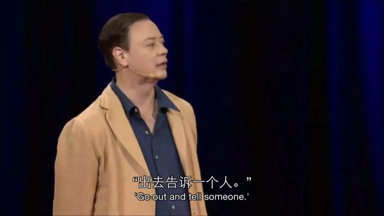
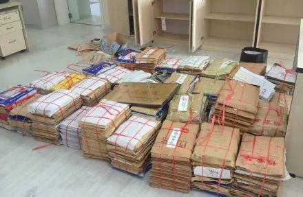
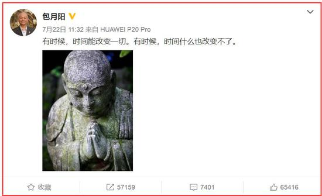
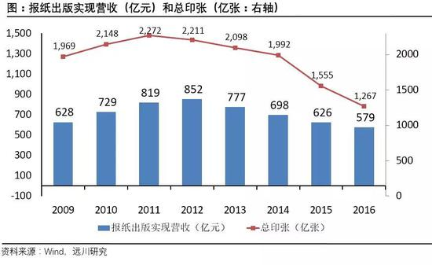
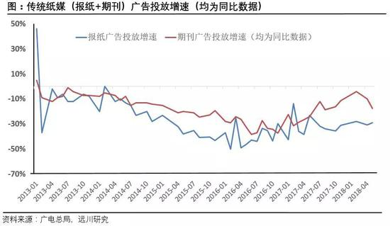
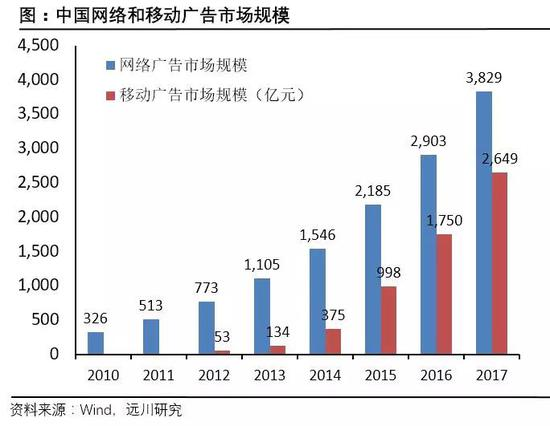
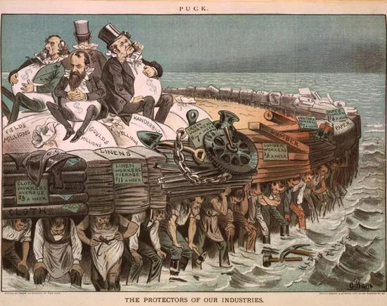

本博客很少连着发两篇《每周转载》。但是这次的疫苗丑闻，打击面实在太大了——几乎是全国性的恐慌。这实在是抹黑天朝的大好机会，俺当然要再接再厉。今天分享5篇网文，都与疫苗有关瓜葛。
另附上前一篇的链接：《每周转载：疫苗之殇，万民遭殃（大量网友评论）》
（编程随想注：看到这篇的标题，俺想起米兰·昆德拉说过——
永远不要认为我们可以逃避。我们的每一步都决定着最后的结局，我们的脚步正在走向我们自己选定的终点。）
（编程随想注：此文写于1998年7月。整整20年过去了，天朝的疫苗问题不但没解决，反而更糟了！）
（编程随想注：此文是某热心读者转贴到俺博客评论区的，特此鸣谢）
俺博客上，和本文相关的帖子（需翻墙）：
《每周转载：疫苗之殇，万民遭殃（大量网友评论）》
《分析“制度性腐败”——为啥天朝的贪官屡禁不止？》
《每周转载：震惊全国的山东疫苗事件（各方报道及网友评论）》
《相当奇葩的天朝，【劫贫济富】的国度》
《点评中国社会九大阶层——没有公平、难以流动、无法稳定》
《每周转载：携程托儿所虐童事件（各方评论及照片、视频）》
《每周转载：幼儿园集体服药事件和相关抗议活动（网文若干，照片多张）》
《每周转载：汇总未成年人被性侵被嫖宿的案件（38起，附图）》
另附上前一篇的链接：《每周转载：疫苗之殇，万民遭殃（大量网友评论）》
★没有人能幸免于难 @ 中国数字时代
（编程随想注：看到这篇的标题，俺想起米兰·昆德拉说过——
永远不要认为我们可以逃避。我们的每一步都决定着最后的结局，我们的脚步正在走向我们自己选定的终点。）
这几天刷屏的事件中，我看到了非常多的愤怒。最令我有感触的一句话是，婴儿要躲毒奶粉，幼儿要躲三色，少儿要躲问题疫苗，中年要躲p2p，老年要防某某药酒，每一个时期，都有一个“老朋友”在等着你。你想躲？躲哪儿去呢？放眼一望，都是相似的人与事。
千万不要觉得自己是幸运儿。事实上，撒下大网的时候，没有人会是漏网之鱼。
我有许多不问世事的朋友，平时只管风花雪月，不谈新闻，甚至会对理想主义者嗤之以鼻：温柔点，生活依然很美好。但缺乏监督的市场，缺乏自由的批评，恶必然会潜生滋长，在阳光的背后蔓延。
直到某一天，你发现它们就埋伏在你身边。他们回家翻孩子的记录本，发现也有那家公司的疫苗。这下蹦起来了：“已经超出忍受底线了！”
中产也好，权贵与底层也罢，所有人都在拼死拼活，创造价值，收取回报，以便让家中老幼妻儿过得好一点。但是，倘若我使出十八般武艺，依然无法护家人周全，努力便失去意义。
倘若我连孩子都保护不了，世界未免太过凶险。大家的心声只有一个：伤害我，我能忍！伤害我孩子，不行，我不答应。
我们家小十月刚满4岁。又瘦，又多病。这两天还在发烧。他超级可爱。我几乎难以想象，当他经受这种人为的灾难，我们会有多么抓狂。
残酷的是，你几乎避免不了。东家的有问题，西家的呢？南家的爆出不合格，北家的呢？你总不能从吃的、到用的玩的穿的，全部进口。几个人有这样的经济实力？又有几个人有这样的时间和耐心？
问题不在这里。问题在于，我们所有人，都对房间里的大象视而不见。我们笑而不语。我们说岁月静好，你我都是时代的幸运儿。我们装睡，对劈面而来的危机闭上眼睛。
但掩耳盗铃，从来都不会让恶消失。成年人忽略的、纵容的，最终都会降临下来，让最弱小的群体付出惨重代价。比如孩子。再比如病人和老人。
我一直觉得，努力的意义，不仅仅是赚取生活的资本，不是买更大的房子，送孩子上更好的学校。还应该努力为自己的孩子，挣取一个更健康、更安全、更自由的环境。在这个环境里，没有毒奶粉，也没有毒针，更没有这些那些避无可避的恶人。
当他们一直存在，中产的繁华幻梦，底层的晋升阶梯，就可能一夕破碎。你永远没有安全感。孩子永远没有真正的乐园。
龙应台说：衡量文明的程度，不是看高楼大厦，不是看车水马龙；而是看它怎么对待弱势群体，看他怎么对待精神病患、对待民工、盲流，看它怎么对待孩子、妇女和老人。
倘若弱势人群一直动荡不安，那么，我们就应该反思。但是，只有控诉是不够的。我们还得做。去追问那些恶人，是否被遗忘了。去看看那些犯过罪的团体，是否随着时间的流逝，被宽恕了？
毒奶粉依然存在。柴静呼吁过的穹顶，依然充满雾霾。三色幼儿园甚至获了奖，股票上升，开了更多的公司。盈利比以前更可观，影响力比以前更大。恶被惩罚了吗？没有。替罪羊走了，真正的恶魔依然在背地微笑。
所以，记住它们的名字。不要忘记，不断发声。也许只有在永不原谅的舆论中，危险才会减少一点点。
在一个著名的 TED 演讲中，安德鲁·所罗门说：“我曾经问过一个意见领袖，我能为那些沉默的弱者做些什么？他说，出去告诉每一个人！”

★我们为什么打不上进口疫苗？ @ 网易科技
国产疫苗又出事了，想必大家已经知道了。这次出事的是几十万只百白破疫苗，这是一种针对百日咳、白喉和破伤风的三联疫苗，主要的接种人群是刚刚出生三个月到半年的小婴儿。
在家长们欲哭无泪、急着核对自家孩子有没有接种涉事疫苗的同时，不少人将“打进口疫苗”提上了日程。打进口疫苗并不是新鲜事。人们有很多理由想打进口疫苗：或许是对国产疫苗的不信任，或许只是单纯地想用比较贵的疫苗，或许只是因为想打的新型疫苗没有国产品种。然而，进口疫苗并不是你想打就能打的。
进口疫苗入华，寸步难行
中国是全球最大的人用疫苗市场，每年批签发疫苗5~10亿支，国内疫苗产值保持在150亿元左右。作为最具有潜力的新兴市场，不少外资疫苗企业也对中国跃跃欲试。然而，想要进入中国市场，并非易事。
中国拥有据说是“全世界最严格”的疫苗监督体系，对进口疫苗的审批则更是把关严密。根据中国现行的《药品注册管理办法》，进口疫苗被批准国内上市之前，必须开展临床试验，除了临床试验外，还要经过1至5年不等的评审时间，才能颁发《进口药品注册证》。这些审批流程的时间成本巨大，而且中国对进口疫苗的评审标准，有时候高到让人无法理解的程度。
以宫颈癌疫苗为例。它于2006年在美国上市，此后迅速在全球100多个国家和地区（包括香港、澳门和台湾）被批准使用，然而，大陆地区却拖了整整十年，才同意让宫颈癌疫苗入华。再后来，中国才加速了宫颈癌疫苗4价和9价的引进。
为什么拖了那么久？
虽然宫颈癌疫苗能够预防 HPV（人乳头瘤病毒）感染、而且 HPV 感染早被证实可以导致宫颈癌，但是中国食药监（CFDA）却坚持认为，这两个事实无法推导出“宫颈癌疫苗可以降低宫颈癌发病率”的结论。它必须花上更长的时间，收集到宫颈癌疫苗能够直接降低宫颈癌发病率的数据才行。这种与全球其他国家地区格格不入的标准，让许多女性错过了打疫苗的最佳时机。
此外，即使进口疫苗拿到了上述的注册许可，也并不代表可以高枕无忧，因为进口许可证需要五年续期一次，一不小心，就会前功尽弃。2015年4月，辉瑞宣布停止供应沛儿7价肺炎疫苗，因为它的进口许可证过期，而续期申请被 CFDA 拒绝了。然而，当时更先进的沛儿13价还在缓慢地审批中，沛儿7价是国内唯一的一种肺炎疫苗，断了就没有替代品了。
CFDA 并没有透露为什么拒绝了辉瑞的续期申请，《财经》杂志援引的分析则认为，这可能是想为国内的肺炎疫苗研发争取时间。CFDA 想不惜代价保护国内疫苗企业，而我们和身边的亲朋好友都可能成为那个代价。那次事件造成了全国性的、持续三年的肺炎疫苗断档：不少孩子已经打过一针、两针，最后家长被告知疫苗已经断货，原本制定好的后续打针计划，就只能这样胎死腹中。
另外，进口疫苗不仅要拿到药品注册许可，还要符合《中国药典》的要求。《药典》每隔五年就修订一次，假如不符合新版药典的要求，那么即使疫苗已经通过其他所有审批、在中国安全销售了很久，也必须下架。
2010年10月，新版的药典对疫苗中的抗生素残留量和 Vero 细胞 DNA 残留量都提出了更高的要求，不少进口疫苗只能打包袱滚回家。每年进口疫苗批签发的数量占所有疫苗的不到 10%，2011年，受新版药典影响，进口疫苗的数量狂跌到了 4%。
国产和进口疫苗，谁更好？
疫苗是守护健康和生命的重要工具，采用最严格的质量和安全标准无可厚非。然而，CFDA 屡屡推出的特立独行的标准，是不是就更加科学、更加严谨呢？不少人因为新版药典事件而认定进口疫苗其实还不如国产疫苗，这是对的吗？恐怕不是。
中国从来就不是疫苗发达国家，我们的防疫水平也还处在初级阶段。目前只对甲类和乙类传染性疾病中的大多数有比较稳定的控制，对丙类传染性疾病的控制能力还很低。当然，能够控制住甲类乙类已经是不错的进步，但我们要清醒一点，离发达水平还有不少距离。
虽然中国拥有38家疫苗生产企业，数量全球第一，但是质量却不乐观，甚至远远落后于印度的疫苗企业。国内的疫苗企业缺乏自主创新能力，名牌产品极少，市场竞争力很低。而国产疫苗总体在稳定性、产能及关键技术上，与进口疫苗相比还有一定的差距。
近日，网上流传一篇名为《“迷信”进口疫苗毫无必要》的文章，文中写道，中国已建立覆盖疫苗全生命周期的监管体系，并于2011年通过了世界卫生组织的国家监管体系评估。这是真的，但很可惜的是，这不代表中国的疫苗制作已经步入国际先进行列。
想要理解中国疫苗与世界水平的差距，我们可以了解一下联合国儿童基金会（UNICEF）一年一度的疫苗爆买活动。联合国儿基会是疫苗国际公共市场的主要采购方，每年都会出面代表数十个贫穷国家进行疫苗的大批采购。为了压缩预算，有 40% 的疫苗、折合下来大约是12亿支都要从发展中国家的厂家那里买。而印度基本包揽了这些订单。
为什么不买中国产的疫苗？因为要保证疫苗的质量。只有通过了 WHO 预认证的疫苗，才有资格参加联合国机构的采购。想要让疫苗通过这个 WHO 预认证，首先，生产该疫苗的国家必须先通过世卫组织的国家监管体系评估。
换句话说，世卫的那个国家监管体系评估只是一个最基本的、如同门槛般的标准。从1999年起，中国就开始申请这个评估了，不及格了两次，一直到2011年，才成为第36个通过这个评估的国家。要知道，据世界卫生组织的统计，全球只有48个国家生产疫苗，而且其中只有27个国家是常规生产大量疫苗的。
早在2006年，印度就已经有7个品种的疫苗通过了 WHO 预认证，得到了走上国际舞台的机会；而中国直到2013年，才第一次有疫苗（成都所的乙脑疫苗）通过 WHO 预认证。也就是说，我们国家生产的大部分疫苗，连出口去援助最贫穷国家的资格都没有。目前中国总共有4个疫苗品种通过预认证，而印度已经有40多个了。
上一段提到的 CFDA 对进口疫苗的苛刻要求，与其说是为人民健康着想，不如说是对国产疫苗的“护短”式保护政策。
对于大多数中国人来说，国产疫苗是价格最低廉、最容易获得的预防工具了，也在过去的几十年里发挥了重要的贡献。如果能够严格按照规程生产，国产疫苗确实是有保障的，毕竟它们也都需要通过 CFDA 审批和各项质量检验。但有多少国产疫苗能够恪守规程，我们就不得而知了。
有钱，你也买不到进口疫苗
少量进口疫苗进入了中国市场，但是，人们依然很难随心所欲地给自己或者孩子打上进口疫苗。
中国的疫苗可以分成两种，包括一类疫苗和二类疫苗。
一类疫苗就是免费向人们提供的计划疫苗，主要由国家定点计划生产，统一定价，再集中招标采购，按计划进行接种。这次出事的百白破疫苗，就是一类疫苗。目前，身为国企的六大生物制品研究所基本垄断了一类疫苗，占据了全国 95% 的份额。
国家对儿童实行预防接种证制度，在不少地区，如果儿童没有按照计划进行接种，入托、入学都会有麻烦。孩子能不能顺利上学是家长们最大的牵挂，因此，一类疫苗的推广势头非常好，根据2004年江苏某市的调查，市镇内学校的预防接种持证率基本上都达到了 97% 以上。正因如此，一类疫苗基本找不到进口品种。
二类疫苗是指一切自费疫苗，其中既有国产疫苗，也有进口疫苗，人们的选择余地大了些。不过，进口疫苗一针就要几百元的价格实在有点昂贵，绝大部分人难以承担。
在这里，我们要多提一句：国产的减毒疫苗，其实是毒力较弱的活病毒株。如果出事的是这种活病毒疫苗，那后果可能不就不仅仅是“疫苗无效”了，可能还会有活病毒感染孩子的危险。
进口疫苗贵有很多原因
首先，国内的疫苗企业普遍规模小、靠仿制起家，而且生产的疫苗大多数是单价疫苗、减毒疫苗，成本较为低廉；而进入中国的外资疫苗企业，都是全球排名前几的大公司，它们销售的疫苗，不少是自己研发的，而且以更先进的联合、灭活、结合疫苗为主。
同时，二类疫苗的身份也是进口疫苗贵的原因。2005年，国家发改委出台了新规定，赋予了二类疫苗自主定价权，并允许疫苗厂家直接向接种单位、疾控中心、疫苗批发商销售疫苗。
这对疫苗企业来说，是一个巨大的好消息；同时对于接种的单位来说，它们也有油水可以赚。虽然疾控机构是国家全额拨款的非营利性机构，但是各地都允许它们加价出售二类疫苗，借此合法盈利。以云南为例，县级及以下接种单位直接购入二类疫苗后，可以加价 35% 售出。也就是说，疫苗企业可以自由定价，而接种单位也可以合法赚钱，可以说是双赢了。
细心的朋友可以发现，对于掌握采购大权的接种单位来说，疫苗越贵，它们就越有利可图。企业更是乐于抬高价钱，由此，形成了二类疫苗竞争激烈、而且价格昂贵的状况。不过，虽然进口疫苗昂贵，但人们对它的热情始终不减，常常还出现进口疫苗断货、有价无市的情形。
早在2016年底，浙江省就出现了“五联疫苗”缺货的问题。这种五联疫苗由赛诺菲巴斯德公司出品，四针可以预防五种疾病，即使总价需要2400元，想要为孩子接种的家长还是络绎不绝。一年多过去了，短缺的状况不仅没有改善还越发严重，蔓延至江苏、山东、广东甚至北京等多地。
从五联疫苗到宫颈癌疫苗，进口疫苗的缺货并不罕见，然而这又是为什么呢？显然，想要打进口疫苗的中国人实在是太多了，而且是越来越多，然而疫苗生产周期长，产能一时半会是提不上来的；另外，即使疫苗生产好了、运输到了中国，之后从检验到审核，可能也需要磨蹭上3-6个月的时间。假如目前承担疫苗批签发的机构愿意将权力下发至各省，建立多个检验中心，疫苗的批签发速度或许会变快很多。
为了进口疫苗而努力
虽然想要打进口疫苗很难，但依然有人靠着惊人的行动力和决心，摸索出特别的解决方法。最直接的，就是飞到香港澳门出境打。
在大陆还没有批准宫颈癌疫苗的时候，便已经有不少女性选择了这个方法，这甚至还发展成了某些旅游线路的招牌项目。尽管大陆后来批准了宫颈癌疫苗，但赴港的热情依然不变：目前，大陆的宫颈癌疫苗主要是2价、4价的，只有少部分地区像香港那样供应9价疫苗。这些2价、4价是指疫苗能够预防多少种株型的病毒，一般来说，“价”越高，效果更好。
赴港打疫苗的人群除了年轻女性，还有亲子家庭。尽管路途奔波，而且无法像香港儿童那样享受免费疫苗和额外的补贴，但带着孩子赴港的家长也有增无减。根据香港卫生署的数据，非本地儿童（主要是大陆儿童）来港注射疫苗的数量，人数每年递增，2010年全年只有1356人，之后的五年里增幅接近三倍。不过，赴港打进口疫苗毕竟只是缓宜之计，解决不了根本问题，小小的香港也不可能满足大陆居民庞大的疫苗需求。
今年五月起，香港的宫颈癌疫苗也出现了短缺的现象，大陆居民想去接种疫苗，要额外付出的，就不仅仅是机票酒店的费用了。以香港仁和医院为例，假如大陆居民只想去那里接种疫苗，那么恕不接待；想要接种宫颈癌疫苗，只能搭配上5.89万港币的基因检测项目，这还不算三针疫苗5500港币的价格。
2016年山东的“黑心疫苗”时间曝光后，短短数月内，到香港打疫苗的孩子数量便增加到2083人，为了保障本地儿童的疫苗供应，卫生署不得不紧急实行配额制，限定每月接受疫苗的外来儿童的数量，每家母婴健康院，每月只能给2~7位外来小朋友接种疫苗。
出境打疫苗不仅麻烦，而且渠道正在缩窄。因此，有人不惜铤而走险，踏上了走私疫苗的道路。2018年1月5日，上海美华门诊的法定代表人、华人医生郭桥，因为销售了1.3万支未经批准的进口疫苗站上了法庭的被告席。2015年到2016年，在沛儿7价断货、沛儿13价还未批准上市的时期，郭桥擅自找到了新加坡的供应商、购买疫苗提供给前来求医的家长。在法庭上，尽管他自辩在运送疫苗的过程中保证了冷链的完整、接种的儿童中没有出现一例不良反应，并且有家长求情，但依然以“销售假药”的罪名，被判刑7年。
有人质疑郭桥通过进口肺炎疫苗牟取暴利，也有人同情他罪不至此，可是有没有人想过，谁该为整整三年的肺炎疫苗断供负责呢？
★郑渊洁：我在1995年和疫苗打过一次交道
（编程随想注：此文写于1998年7月。整整20年过去了，天朝的疫苗问题不但没解决，反而更糟了！）
1995年12月4日，读小学的儿子郑亚旗放学回家后对我说：“郑渊洁，老师让明天交18元钱。”
我说：“知道了。一会儿给你放在书包里。”
吃晚饭时，我无意问了郑亚旗一句：“交钱买什么？”
郑亚旗说：“打针。”
我警觉地问：“打什么针？”
他说：“预防针。”
我感到蹊跷。在我们国家，给孩子注射第一类疫苗都是免费的，学校为什么收费给学生打预防针呢？略知商家通过老师向学生推销商品内幕的我打了一个激灵，莫非药品或卫生防疫部门也知耻而后勇地打起了学生的主意？我有一个原则，不管老师让我掏钱买什么没用的东西，我都酣畅淋漓地解囊。但是如果校方动通过往孩子身上注射药剂或口服药片的念头挣钱，我会殊死反抗。作为一个家长，当学校利用权力往你的亲骨肉身体里输入有可能毁了你的孩子的药物时，如果你不但不抗争保护孩子，反而提供经费，你还是父母吗？！
我向儿子要白皮书。老师每次收费都会给家长一张名正言顺的用白纸打印的信，我家戏称其为白皮书。儿子中止进餐从书包里将白皮书找给我看。白皮书上说是给学生注射“甲肝疫苗”。儿子从我的脸色上判断我可能会拒绝交费，他说：“我明天必须交钱。不带钱，老师会让我回家拿。”我说：“钱你照交，到打针那天，我给你请病假。这针咱们绝对不能打。谁为了经济目的往我儿子身上注射东西，我就跟谁拼命。”我儿子后来说，他从来没见过我的脸色那么难看过。其实这个道理很简单：生养一个孩子不容易。
次日，我匿名给北京市教育局打电话，向他们询问最近是否在全市小学给学生注射甲肝疫苗，回答是否定的。保险起见，我又给北京市卫生局打了电话，答复依然是否定的。为了杜绝冤假错案，再保险起见，我又给儿子就读的学校所在的区教育局打了电话，答复还是不知道此事。放下电话，我浑身颤抖，我不能不想起日本731部队。家长将生龙活虎的孩子送到学校，难道孩子一进校门就变成了任人宰割的牲口？
当天晚上我向儿子宣布，打针那天你不用去上学了。我将调查结果向他通报。往常每逢我不忍心看儿子受应试教育摧残而弄虚作假给他写假条让他获得放风的机会喘口气时，他都比较高兴。而今天他问我：“其他同学怎么办？”
我没听明白，问：“什么其他同学？”
郑亚旗说：“既然你知道了我们学校打预防针是为了赚学生钱，针剂可能是伪劣产品，你干吗不救所有的学生？他们也是父母费劲儿养大的呀？”
我和儿子对视了足足两分钟一句话没说。我清楚我这次如果不制止他的学校给学生打甲肝疫苗，我这辈子甭想在他面前抬头做人了。
第二天，我以家长身份匿名给区教育局打了举报电话。放下电话，我担心区教育局忙于升学率疏忽我的举报，又给某电视台新闻部我的一位记者朋友打了电话，请他出面直接制止我儿子的学校擅自给学生打针。那朋友马上以电视台的名义给学校打电话，校方一听是电视台自然紧张，答复是打针系地区卫生防疫站通过校医联系实施的。记者朋友又给该卫生防疫站打电话核实，答复是此事纯属本站工作人员个人行为，没有接到文件。
次日，学校向家长退款。我再三叮嘱儿子，不能走漏是我破坏打针的风声，否则你在学校的处境会朝不保夕。儿子说当然得保密。
我不得不佩服记者的嗅觉。我以为事情已经完了，没想到几天后记者朋友来电话说，他继续调查了此事，甲肝疫苗一支才10元，学校敢收学生18元！他还说卫生防疫站可能是13元批给学校，学校每支干赚5元！他还说卫生部认可的生产甲肝疫苗的厂家有哪家哪家，其余的都是不合格药品。还说经他了解我儿子学校准备给学生注射的甲肝疫苗的生产厂家名不见经传。他说这样缺德的事如果不曝光后患无穷。我一听急了，说你敢！你爱曝哪所学校都没关系，就是不能曝我儿子的学校。你们新闻部的人都知道是我给你提供的新闻线索，你们去学校拍摄时，你怎么能保证你们的司机不和学校的司机聊天？一骂交通警就有共同语言无话不说了。如果让学校知道了是我搞的鬼给学校造成了这么大的经济损失，我儿子往后还怎么在学校混？我威胁他说你如果曝光我就和你断交。他权衡后选择了作罢。
1998年3月18日，山东单县卫生防疫站副站长宋某某自行携带碘钙营养片到单县城关第一完小推销。宋某某是每片9分1厘进的药，他卖给学校每片4角。学校卖给学生每片6角。3月24日至25日，学校将碘钙营养片发给18个班的1242名学生服用，至26日中午，先后有412名学生出现口干、腹痛、恶心、呕吐等不良反应，其中391人到医院接受治疗。
1998年1月8日，兰州市地方病防治领导小组、市卫生局和市教育局向全市中小学印发了《关于在中小学生中开展强化补碘及碘缺乏病监测的通知》，要求全市中小学生每人交28元至30元的补碘费，然后由学校向学生以每片0.77元的价格出售由市卫生局统一以每片0.10元向贵州兴义制药厂购买的海藻营养碘片。该药未经卫生部批准。截止4月11日，已有6300名学生服药后出现恶心、呕吐、腹痛等不良反应到医院治疗。
1998年4月，邢台市卫生防疫站学校卫生科的王某某以每片0.20元的价格卖给清河县教育局8万片陕西汉江制药有限公司生产的“速效肠虫净片”。清河县教育局加价后在4月15、16日两天以每片0.50元出售给全县学生每人两片，约有16000多名学生服用了该药。服药的当天，部分学生开始出现不良反应：高烧、腹泻、呕吐等。仅16日一天，就有4000名学生到医院治疗。清河第一小学学前班的学生也在劫难逃，17日，学前班一位女生在清河第二医院输液时对采访此事的记者说：“老师说了，不吃药也要交钱。我吃了就肚子疼。”
学校是教书育人的地方。如果学校将学生当作摇钱树，这还是学校吗？如今，我们的孩子事实上已经成为学校向家长勒索钱财的人质，有自己的亲骨肉在“绑匪”手中，哪个家长敢不老老实实交钱？如果我的儿子仍在那所小学上学，给我10个胆我也不敢写这篇随笔。一个老师曾经对我说过这样的话：“如果我对哪个学生或他的家长有意见，我治这个学生的最好办法不是体罚他或骂他，而是永远不搭理他！”我当时毛骨悚然。这种冷暴力在本质上属于撕票。
1998年4月，吉林省长春市朝阳区检察院破获一起特大贪污案。吉林省教委下属办公室的工作人员孙某某贪污公款200多万元。一个普通工作人员在不是创造巨额利润的企业的教委办公室居然能贪污200多万元。
家长之所以任凭学校搜刮钱财，说穿了是怕孩子日后上不了大学。为了孩子能上所谓的好学校或在学校受老师的器重以保证孩子将来跨进大学的门，家长面对学校忍气吞声忍辱负重什么都可以付出。但当学校要拿孩子的命挣钱时，家长也能付出吗？
希望能看到有家长于孩子在义务教育学校就读时就敢对校方的所有巧立名目收费说不。真有这一天，我们的教育就出现了曙光。
在1995年12月，我可能救了一个学校的全体学生的命。
使我内疚的是，我没能同意电视台在1995年底利用媒体警告学校不要通过给学生打针吃药创收。真要是那样，也许今天就不会有如此多的孩子受服用碘片服用肠虫净片伪劣疫苗的荼毒了。上帝宽恕我。
最后，我给凡是不想白发人送黑发人的家长提个醒儿：当您的孩子告诉您学校要收费给学生打针吃药时，不管您昔日在孩子面前精心塑造了多么道貌岸然正人君子的高大形象，您在交费后也必须屈尊协助孩子作案在打针吃药那天逃学。否则孩子一旦遭遇不幸，巧妇难为无米之炊的您拿什么望子成龙？
写于1998年7月18日
本文收入1999年出版的郑渊洁著作《第一次写皮皮鲁》
★深度调查行业兴衰史——中国调查记者都去哪了？ @ 新浪专栏
过去两天，焦虑席卷全国，除了制药公司的资本大鳄之外，还有两个人物被意外牵出，他们就是著名记者王克勤，以及他在《中国经济时报》的顶头上司包月阳。
（左：王克勤 右：包月阳）
2010年3月17日，时任《中国经济时报》首席记者的王克勤，发表了一篇重磅的调查报道。两个月后，签发这篇报道的总编辑包月阳被免职，调去仅有20余人的中国发展出版社工作。第二年七月，《中国经济时报》调查部被解散，王克勤被迫离职。
已经是明星记者的王克勤，找新工作并不难，他在2011年9月加盟了《经济观察报》，任总编辑助理。但新工作并没有干多久，在2012年10月，《经济观察报》调查新闻部也遭到了解散，王克勤不久后便再次离开。

（王克勤离职时带走足足【2吨重】的上访材料 2013年2月，北京）
2018年7月22日，包月阳发了一条意味深长的微博：“有时候，时间能改变一切。有时候，时间什么也改变不了。”在这焦虑和愤怒的一天内，57159个转发，7401条评论，65416个点赞。

（包月阳的微博）
不过，这些当年冲在报道第一线的人物，得到关注的时间总是短暂的，相信不久后，他们的消息就会被淹没在综艺八卦和明星绯闻里。人们只会在事情降临到自己身上时，才会问：“那些为我们抱薪取暖的人，他们都去哪儿了？”
王克勤和包月阳的遭遇，只是中国深度调查行业的一个缩影。这个曾经坚硬和骄傲的行业，凋零地无比迅速。根据中山大学张志安教授估计，现在仍在从事一线深度调查的记者，不过数十人。
深度调查行业的兴衰，是这篇文章的主要内容，文章包含四部分：
1． 曾经辉煌的过往
2． 日益衰落的纸媒
3． 凋零离去的记者
4． 深度报道的未来
下面进入正文部分。
1. 曾经辉煌的过往
朱镕基的“五不”很出名：不题词、不受礼、不吃请、不剪彩、不批条子。但他给《焦点访谈》破过例，在1998年视察中央电视台时，用签字笔给节目组留下了“舆论监督，群众喉舌，政府镜鉴，改革尖兵”的十六个字勉励。
（朱镕基视察焦点访谈，1998年，北京）
曾有部长忐忑地对敬一丹说：“现在我晚上都不敢出去吃饭，因为怕耽误了看《焦点访谈》。总理常在会上问：‘你们看昨晚的《焦点访谈》了吗？’答不上来怎么办？我如果有事看不成，就让秘书看，让家人看，再告诉我。”
那会儿权威单位都怕记者，而且特别怕《南方周末》。在南周的旗下，余刘文扳倒了背景深厚的昆明恶霸；赵世龙在洗脚城卧底三天揭发了湖南高考舞弊案；孙保罗揪出了贵州官场一串串庸官，等等等等……
那是纸媒的辉煌时刻，江艺平时代的《南方周末》广告收入过亿，好的记者月收入过万，要知道2000年全国城镇员工平均工资才780元。曾经有记者这样描述上世纪90年代南周的工资：“钱发下来了，还没来得及存进银行，下个月又发了。放在家里，一摞一摞的。”
在崇高的荣誉感和高薪的激励之下，一大批深度报道记者活跃于神州大地。急速崛起的中国经济，带来了诸多光芒四射的成就，也催生了许多暗黑莫测的罅隙，这给深度调研提供了丰厚的土壤，而媒体为了扩大社会影响力，也鼓励记者做深度报道。
那个年代为我们留下了很多教科书式的深度调查案例，而那些诸如“让无力者有力，让悲观者前行”、“总有一种力量让我们泪流满面”等文字，时至今日都让人热血沸腾。当年洛阳纸贵、一报难求的盛况，依然历历在目。
雪球创始人方三文，北大中文系毕业后就加入了《南方周末》，他后来说“当时我觉得，《南方周末》就是中国最好的报纸，最好的媒体，也是我能找到的最好的工作。到现在为止，我都为当时能进《南方周末》感到幸运和自豪。”
《南方周末》前著名记者，如今腾讯的副总裁陈菊红后来写过一篇《离开》，她说：“那些金子一样的日子，闪亮得让人不敢相信。”
2. 日益衰落的纸媒
2010年之后，在各类新媒体冲击下，纸媒开始急速衰落，2012年8月微信公众号横空出世，传统报纸和杂志的收入利润更是江河日下，总印张2011年顶峰时的2272亿张，急速下跌到2016年的1267亿张。

报纸出版行业收入的停滞，伴随而来的是广告主的离场，报纸+期刊能够拿到的广告投放费用日益减少。在2016年，这种广告投放的同比下滑比率居然超过了40%，纸媒经营的困难可想而知。

而与此相对比的是，网络和移动广告投放正在井喷，其中网络广告从几百亿的规模，迅速做到了2017年的近4000亿；而移动广告也从无到有，2017年规模发展为2649亿。

著名记者王志安曾经说过：“在中国，记者这个职业的天花板太低，几乎没什么成长性，30岁不进入管理层或者转行，就是失败的代名词。但调查记者对知识，经验有很高的要求。不用感慨，有人愿意为调查记者开出百万年薪，人会排着队回来。所有不付钱的感慨没什么价值。”
但显然，急速衰落的传统媒体，已经没有了90年代的阔绰，调查记者们的大批离开，是必然的问题。当然，这不是大批优秀记者离开的唯一原因。
3. 凋零离去的记者
世界杯期间，中国仅有几万名注册足球运动员的真相刺痛国人，但调查记者的数量，比足球运动员还要稀缺的多。
一直将调查记者作为研究对象的学者张志安在2011年发布了一项《中国调查记者生态调查》，直言“即使用最宽松的定义标准，全国调查记者也不过数百人”。
而到了2017年，当年尚能找到334名调查记者的张志安，在撰写《新媒体环境下中国调查记者行业生态变化报告》时，仅仅联系到175名调查记者。六年时间，调查记者的人数又几乎腰斩。
河南《大河报》的一位调查记者曾说过：“2000年的时候，记者的工资达到五六千、六七千，当时郑州的房价是一千多，可想当时的收入是非常高的；现在郑州的房价每平米1~2万了、多的3~4万，现在记者的人均工资才四五千”。
曾经调查记者是天之骄子，如今他们的工资，只抽得起娇子。报道了三聚氰胺的简光洲2012年在社交媒体上写道：“理想已死，我先撤了，兄弟们珍重！”
记者身处时代前沿，他们极其敏锐的察觉到行业兴衰的转折，当互联网无可阻挡的崛起时，不少记者便奋不顾身的扑了上去。
报道过鸡西矿难、焦作录像厅失火等重大事件的李玉霄，在2006年投入腾讯的怀抱；打造了《卧底番禺传销》、《揭开传销绝对秘密》等传销系列的傅剑锋，也在2011年告别记者生涯，成为腾讯新闻中心的副总监。南周头版编辑方三文头也不回的去了网易，随后创办了互联网投资社区雪球。
《21世纪经济报道》的一代稿神郎朗，能用稿费在广州买房的男人，写过一篇广为流传的《一个10年老记的心声——我为什么要离开》，解释自己为何离开纸媒“为了人生不留遗憾，为了不在平媒大船沉没中跟着沉沦，我必须走出这关键的一步。”
马云说员工离开，要么钱没给够，要么心委屈了。记者们主要可能还是心委屈了。
被誉为“中国揭黑第一人”的王克勤，当年打扮成农民，把笔记本和相机藏在麻袋里，嘴里叼着烟，开着拖拉机，突破封锁报道了定州征地血案，其中曲折艰辛闻者落泪。但当他站上央视的领奖台时，这种荣誉感和自豪感也是无可取代的。
不过这种荣誉感并不能当饭吃。这个硬的像刀一样的汉子，四次因为各种原因被报社劝退，长期只能拿底薪，出门调查大多坐公交，更是曾被人打电话威胁要来“接”他老婆孩子，一家人在荷枪实弹的警察保护下度过了好几天。
所以，这个曾经号称要把调查记者做到80岁的人，后来去做了公益，帮助他调查过的尘肺病人。
2003年连续报道了孙志刚案和非典情况后，南方都市报的总经理喻华峰、总编程益中因涉嫌受贿被带走，差点被办成铁案的他们被放出来后，渐渐淡出了纸媒。喻华峰创立了本来生活网，程益中加盟了乐视体育香港公司。
名单上还有很多人，比如：孙保罗、郭国松、朱德付、余刘文、谭庭浩、赵世龙、简光洲、付振中、陈峰、邓飞、龙志、刘建峰、朱文娜、景剑锋、傅桦、仇子明、乐倩、杨琼文、卢广……
他们具体的遭遇，这里就不做细述了，原因想必不难明白。
而那些受惠于调查揭黑的网民，也并没有坚定地站在调查记者一边，反而在近些年一波接一波的污名化记者和妖魔化媒体的风潮中，向他们投去了冰冷的石块。在转发包月阳微博的那57159个人中，又有多少个没跟风骂过记者呢？
因此，对于大部分艰难挣扎的调查记者而言，他们的左耳，可能响着周华健的那句歌：其实不想走，其实我想留；而他们的右耳，则可能是李诞的那句话：人间不值得。
4. 深度报道的未来
1894年，美国GDP超越英国，成为世界第一，随之而来的不是民主、文明和健康，而是腐败、剥削和污染。贫富差距拉大，底层人民焦虑，社会心态浮躁，环境污染严重，食品卫生糟糕……马克吐温用辛辣的笔触将这一切记录在了他的名著《镀金时代》里。

（工厂的保护者，Bernhard Gillam，1883年）
面对社会的种种乱象，“铁肩担道义，辣手著文章”的美国调查记者们掀起了扒粪运动（muckraker），也称黑幕揭发运动。
1905年，25岁的调查记者厄普顿·辛克莱（Upton Sinclair Jr.）以打工的名义，卧底芝加哥的一家屠宰场七个礼拜，目睹了病死猪肉制成香肠的疯狂恶心景象，将其写进《屠场》一书中，引爆了美国人的舆论。
（厄普顿·辛克莱，CBS，1942）
据说，美国总统西奥多·罗斯福读《屠场》时正在吃早餐，当读到香肠中混进死老鼠时，大喊一声“我中毒了！”把吃了一半的香肠扔出窗外，后来再也不敢吃肉，变成素食主义者。
《屠场》一书，直接促成了美国国会通过了《纯净食品与药品管理法》与《肉类检查法》，美国食品和药品从此慢慢安全起来。
怀着推动美国社会进步的目的，美国调查记者们再接再厉，写出了2000多篇揭露社会各界丑闻的文章，从市政腐败到经济垄断，从药品掺假到雇佣童工。在调查记者看来这个看似发展迅速的社会，道德的血液明显跟不上肌体的成长，社会实际上藏着令人发指的罪恶与黑暗。
揭露假丑恶的扒粪运动有没有摧毁美国人民建设美好未来的信心？没有。这些揭短反而使美国社会上下达成了改革的共识，诸多影响深远的制度都是在那一时期建立起来的。
扒粪运动产生了深远的影响和积极的社会作用，调查性报告成为美国的新闻传统。水门事件、越战等美国历史的重要时刻，都有调查报告在背后左右的身影。普利策奖更是成为全球新闻人的诺贝尔奖。
心系天下的不只是美国调查记者，中国文人从来都不缺少“先天下之忧而忧”的家国情怀，也不缺少心怀新闻理想的青年记者，我们需要思考的是如何给他们更好的社会环境和物质支持。
调查记者并不是一个狭隘的噱头，所有勇于用孤独臂膀揭开残酷真相的人，都是这个社会的守夜人。对他们好点儿，就是对我们自己好点儿，对我们的孩子好点儿。
谨以此文，致敬那些曾为我们挺身而出的人，无论你们现在在哪里。
参考资料：
[1]． 告别“黄金时代” ，陈敏
[2]． 中国调查记者行业生态报告，张志安
[3]． 王克勤：一个捍卫人道的专业记者，他山石
[4]． 镀金时代的扒粪运动，周斌，国家人文历史
★十七进制：疫苗和“猪圈理论”
（编程随想注：此文是某热心读者转贴到俺博客评论区的，特此鸣谢）
01. 看不见的“猪圈理论”
一头猪生病了是猪自身抵抗力不行，一群猪病了应该是猪圈出了问题。出过一次问题，可能是某猪免疫力低下。年年都出问题，猪倌是否该反思下饲养方式？
若不是患了健忘症，“疫苗之殇”应该在猪的脑海里反复浮现。
2004年 江苏宿迁假疫苗案
2005年 安徽泗县疫苗违规接种事件
2009年 大连疫苗违法添加事件
2010年 广西来宾假狂犬疫苗事件
2010年 山西疫苗事件
2012年 山东潍坊非法疫苗案
2016年 山东非法疫苗案
…………
日复一日，年复一年，周而复始，从未间断。每次疫病出现后，猪群一片哗然，好像阳光底下出了新鲜事。其实不过是上次事件的重演，还是同样的疫苗，还是同样的味道。
难道没有处理过吗？应该也不是。那问题到底在哪里？主要有以下三点：
❶ 侥幸心理作祟
99% 的猪都相信这事不会落到自己身上，大多闻不出同样的味。
❷ 系统性思维缺失
每次只见树木不见森林，只讨论猪的问题不讨论圈的问题。
❸ 第一性原理沦丧
不谈事件发生第一性原理，只谈论事件发生的次要性事件。
总结下“猪圈理论”核心精髓：【只见猪，不见圈】。
02. 万恶的代罪猪
事件发生后，猪群很愤怒。第一反应就是找出犯事的猪，到底是哪一只猪把圈给污染了。
你看你多脏，因为你不爱卫生，感染了其它小猪。你这只万恶的猪，应该被阉掉。群猪激愤，万猪昂扬。
如果事情闹得很小，猪倌也懒得搭理。管它呢，反正最终也是全部杀了过年。如果事情闹大了，猪倌就会将猪抽上几鞭子以示权威。毕竟一群猪嗷嗷叫也是挺烦人的。
如果事情闹得特别大，猪倌就将制造污染的猪给干掉。虽然有点舍不得，毕竟这是圈里长得最壮的猪，准备养大再杀。但若是让其它猪怀疑到疫病是因为猪圈不干净，那所有的猪都会跑掉。这是一件非常麻烦的事情。
制造污染的猪被干掉后。群猪非常开心，感谢猪倌给了我们一个如此安乐的窝。让我们一起喊：“厉害了，我的倌！”
被干掉的这只猪可能并不瞑目，它认为自己不是污染源头。虽然不爱洗澡是它的原罪，确实挺可恶，但它也是猪圈受害者之一。
不爱干净的猪被干掉了，但感染源仍继续发酵。圈还是那个圈，病还是那个病。
03. 被阴谋论圈养的猪
代罪猪才被干掉，马上就有一只叫“小平”的猪出现了。这是一只俊俏可爱的小猪，也是猪倌们最喜欢的猪，听说它把灵魂都埋葬在了猪圈。
这只猪下面有一群喜欢“阴谋论”的猪。这只猪告诉所有猪：
我们要警惕啊，这次疫苗事件是个大阴谋
在我们猪圈之外还有一些猪圈
这些猪圈的猪一直在蓄意制造病毒
它们一直想攻占我们的美好家园
这次疫苗事件肯定是它们干的
听说那只制造污染的猪，就是它们派过来的卧底
…………
这只阴谋猪能说会道，获得了很多猪的信任。它的“疫苗阴谋论”获得 4万+ 点赞。
喜欢阴谋论的猪大多不在意病毒对猪体的危害，它们最大的兴趣是把猪圈所有问题都归结为“阴谋”。
没有人知道喜欢“阴谋论”的猪是真的不知道猪圈有问题，还是因为它知道猪倌最喜欢的就是这种论调。关于这个问题，一直是猪圈里最大的秘密之一。
反正猪倌挺开心，有这样一群阴谋猪在转移方向，省得去打扫猪圈。
这真是一群让人省心的猪！
04. 治愈系的猪
还有一群正能量满满的猪，猪倌每次看到它们就躲在被窝里偷乐。它们可以把任何负面事件都改造成猪们前进的动力。
以下是这些“可爱”小猪的言论：
疫苗的少数不良反应，是医学发展阶段不可避免的现象。
身为小猪的爸妈，我们的情绪需要理智出口。
感谢领导，这次的应对非常积极。
疫苗事件的发生，在哪个猪圈都可能会出现。
疫苗的监管还有待加强，但这并不应该摧毁我们对于疫苗的信心。
因为疫苗的发展，很多可怕的传染病都几近灭绝了。
有人心怀恶意试图瓦解猪倌努力处理的效果，我们要警惕这些搅屎棍。
…………
这是一群自带解药的猪，猪圈是它们的理想世界。它们似乎确实在真心诚意在为猪圈点亮光明。
这些猪永远都看不到猪圈之外的世界，永远也不明白污染之源来自猪圈。
这真是一群幸福的猪！
05. 相信领导的猪
真正得到猪倌宠爱的，还是这群“相信领导的猪”。
这些猪与治愈系有相似之处。只要有了领导的关心，这些猪就非常地开心。
只要有了领导的批示，它们就觉得要感恩戴德。只要有了领导的干涉，它们就认为事件会水落石出。
每一次它们都选择了相信，从来不记得这并不是第一次指示。
2005年领导批示过；
2012年领导也批示过；
2016年领导仍然在批示；
2018年还是在愤怒的批示。
…………
如果行政命令有效的话，就不会有那么多代罪猪出现了。问题的根源可能在于猪圈，而不是猪本身
相信领导的猪生气反驳道：没有领导，代罪猪能抓到吗？没有领导，你家猪仔能打上疫苗吗？
这真是一群聪慧的猪！
06. 娱乐至死的猪
鱼的记忆只有7秒，娱乐猪的记忆只有7天！
无论猪圈里发生什么惨绝人寰的事情，只要猪倌去发一则捉奸猪的陋行，娱乐猪就会兴奋得一塌糊涂。
当揭露疫苗真相的王克勤小猪丢掉工作的时候，娱乐猪正在眉飞色舞地讨论王谢的“倾城之恋”。
当简光洲小猪辞去记者职务谈“理想已死”时，娱乐猪正在网络上准备捉奸
…………
偶尔翻到小猪仔的疫苗本时，娱乐猪们也会无奈地哀叹几声。但只要闻到了娱乐界的两性异味，马上忘却了红黄蓝对小猪们的荼毒。只要看到了娱乐明星猪的离婚声明，马上忘却了鸿茅药酒对猪的伤害。
长满杂草的猪圈里，不出7天，没有猪再拷问疫苗的始终。众猪娱乐的世界里，眉开眼笑地享受抖音里的奶头乐人生。
这真是一群懂得享受人生的猪！
07. 在“猪圈”里打转
无人打扫的猪圈，疾病横行很正常。猪与猪之间都在互相埋怨，没人关注猪圈的问题。
偶尔有一两只独立独行的猪，说猪圈好像太腥臊。要么被猪倌赶出猪圈，要么被猪倌制成肉干，或者被阴谋猪说成是外来的汉奸猪，或者被治愈系猪说成负能量的猪。
当然也有不少猪已经明白真相——猪圈出问题了，不能再呆了！它们在加油挣钱，一定要让自家猪仔逃出猪圈。
所以，开火锅店的猪老板转发完声讨疫苗问题的文章后，狠狠地往刚熬制好的汤锅里多掺了两桶地沟油！
俺博客上，和本文相关的帖子（需翻墙）：
《每周转载：疫苗之殇，万民遭殃（大量网友评论）》
《分析“制度性腐败”——为啥天朝的贪官屡禁不止？》
《每周转载：震惊全国的山东疫苗事件（各方报道及网友评论）》
《相当奇葩的天朝，【劫贫济富】的国度》
《点评中国社会九大阶层——没有公平、难以流动、无法稳定》
《每周转载：携程托儿所虐童事件（各方评论及照片、视频）》
《每周转载：幼儿园集体服药事件和相关抗议活动（网文若干，照片多张）》
《每周转载：汇总未成年人被性侵被嫖宿的案件（38起，附图）》
版权声明
本博客所有的原创文章，作者皆保留版权。转载必须包含本声明，保持本文完整，并以超链接形式注明作者编程随想和本文原始地址：
https://program-think.blogspot.com/2018/07/weekly-share-123.html
本博客所有的原创文章，作者皆保留版权。转载必须包含本声明，保持本文完整，并以超链接形式注明作者编程随想和本文原始地址：
https://program-think.blogspot.com/2018/07/weekly-share-123.html